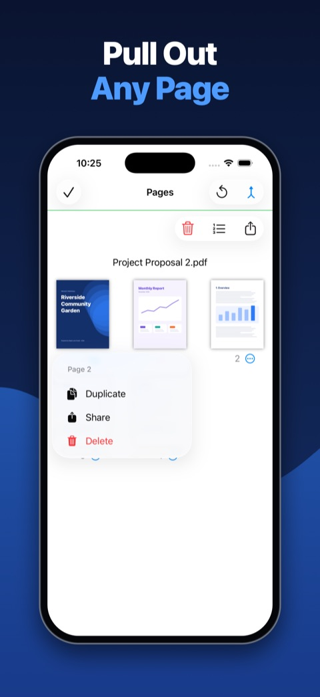

How to split a PDF or extract pages on iPhone
A 40-page bank statement, and you only need to send page 3. Here is how to save just the pages you want.
Updated November 2026
Free way: Print with a page range
- Open the PDF, tap Share, then Print.
- Tap Range (or Pages) and choose the pages you want.
- From the share menu at the top of the print preview, choose Save to Files.
It works for one range at a time. Picking pages that are far apart, such as 2, 7 and 15, takes several rounds.
Quicker way: PDF Merge
- Open the PDF in PDF Merge.
- Pull out the pages you need, or delete the pages you don't.
- Save the result as a new PDF, or share a single page as an image.

Common questions
Will the original PDF change?
No. You save the chosen pages as a new file, and the original stays as it was.
Can I split a password-protected PDF?
You need the password to open it first. After that you can work with its pages, and PDF Merge can lock the new file with a password too.